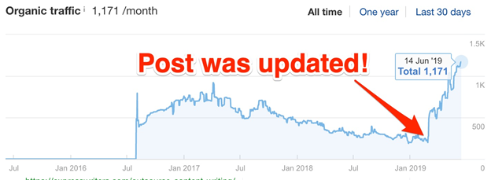

7 Free Ways To Increase Traffic To Your Website
There are many ways you can increase traffic on your website, and in today’s post, we’re going to look at 7 of them, including several ways to boost site traffic for FREE.
1. Advertise
This one is so obvious, we’re going to look at it first. Paid search, social media advertising and display advertising (try our Smart Ads Creator!) are all excellent ways of attracting visitors, building your brand and getting your site in front of people. Adjust your paid strategies to suit your goals – do you just want more traffic, or are you looking to increase conversions, too? Each paid channel has its pros and cons, so think carefully about your objectives before you reach for your credit card.
If you’re hoping that more traffic to your site will also result in more sales, you’ll need to target high commercial intent keywords as part of your paid search strategies. Yes, competition for these search terms can be fierce (and expensive), but the payoffs can be worth it.
2. Get Social
It’s not enough to produce great content and hope that people find it – you have to be proactive. One of the best ways to increase traffic to your website is to use social media channels to promote your content. Twitter is ideal for short, snappy (and tempting) links, whereas Google+ promotion can help your site show up in personalized search results and seems especially effective in B2B niches.
If you’re a B2C product company, you might find great traction with image-heavy social sites like Pinterest and Instagram. Here's more advice on making the most of social media marketing.
3. Pay Attention to On-Page SEO
Think SEO is dead? Think again. Optimizing your content for search engines is still a valuable and worthwhile practice. Are you making the most of image alt text? Are you creating internal links to new content? What about meta description? Optimizing for on page SEO doesn’t have to take ages, and it could help boost your organic traffic.
4. Target Long-Tail Keywords
Got your high-intent keyword and popular keyword bases covered? Then it’s time to target long-tail keywords, too. Long-tail keywords account for a majority of web searches, meaning that if you’re not targeting them as part of your paid search or SEO efforts, you’re missing out.
5.Target topics with search traffic potential
Besides word of mouth, this is our second best marketing channel, sending us hundreds of new users every month.
Without a doubt, search engine Optimisation (SEO) is one of the best ways to achieve consistent, long-term results. For as long as you rank highly in Google, you’ll be able to generate passive organic traffic to your site.
To do this, you need to write about topics people are searching for. In other words: topics with search traffic potential.
Here are two quick ways to get started.
6. Update “outdated” content
We recently updated our article on outsourcing writers, and it went from ranking for nothing to ranking #1 for its target keyword.
We also updated our post on anchor text, after which there was a massive uptick in traffic to the post:
This is now a core part of our strategy here at Ahrefs.
We pinpoint articles that are no longer evergreen (in the eyes of Google), and we refresh and republish the content.
As you can see, SEO is not a set-it-and-forget-it task. Even if you’re already ranking well for your target keyword, competitors may try to “steal” the top spot. Google may also “demote” your rankings if your content becomes outdated.
So you need to keep your content fresh and up-to-date to maintain your rankings.
To find the pages with decreasing traffic, look at your Google Analytics. Alternatively, paste each of your pages into Ahrefs’ Site Explorer and look at the organic traffic graph in the Overview report.
To find out why your rankings have dropped, look at the search results to see what the top-ranking posts have that you don’t. Often, ranking drops occur because certain parts of your content are outdated. For example:
• Screenshots;
• Process;
• Stats;
• Links (broken, etc.)
• Year in title.
Depending on the target keyword, sometimes refreshing the outdated sections will suffice. In other cases, you might find that you’ll have to do a full rewrite of the article (which is what we most often do here at Ahrefs!)
Learn more about keeping your content evergreen in our guide to evergreen content.
7.Understanding The Sources Of Your Website Traffic
There are effectively two ways that you can drive traffic to a website. The first way is free. It involves things like search engine optimization, setting up a blog, social media marketing and so on and so forth. The other way is paid. Everyone knows that paid ads can drive traffic to a website, but it can also get costly.
If you don't understand things like conversion rates and tracking of clicks to see how much a sale costs you, then you'll surely fail with paid traffic. Either way you slice it, there are some great ways to drive traffic to your website that fall into both of these categories.
However, the more organized you are, and the better you've presented your offer at the outset, the more likely you'll be to succeed with any one of these traffic methods or strategies. So, how do you track all of your efforts to ensure that you're doing the best to understand where your visitors are coming from when it comes driving traffic to your website?
The most basic and straightforward way is to use Google Analytics. And I'm not just talking about installing Google Analytics. I'm talking about using the UTM (short for Urchin Tracking Module, which relates to the old Urchin analytics system that Google acquired to create its tracking tool) variables that exist in Google's Analytics to ensure that you know where they're coming from.